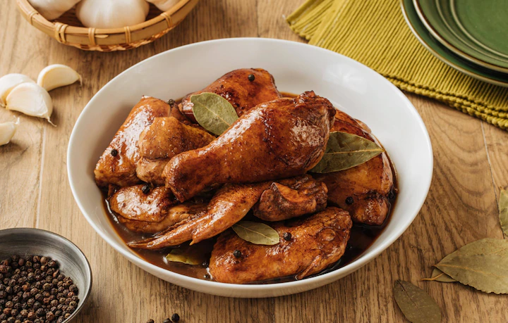

How to Cook Adobo
Recipe Instructions
- Add the oil and sear the pork until browned on all sides.
- Add the vinegar
- Add low sodium soy sauce
- Add garlic
- Add bay leaf
- Add black peppercorns and sugar
- Add water and bring to a boil
- Reduce the heat to medium low, cover, and simmer for 1 hour.
- Remove the cover and continue simmering
- For another 30 minutes to reduce the sauce.
- Serve over rice!
Cook
-
Heat oil in pan and sauté garlic and onions. Then add chicken to the pan
and sear on all sides, until you have a little browning in the chicken
skin.
-
Pour in vinegar, soy sauce and water. Add bay leaves, pepper and Knorr
Chicken Cubes. Bring to a boil over high heat then reduce heat to
simmer, but do not cover the pan. Continue to simmer for 10 mins.
-
Remove chicken pieces from sauce and fry in another pan until nicely
browned.
-
Put back fried chicken pieces into sauce. Add sugar and let simmer again
for another 10 minutes or until sauce has thickened. Serve warm.

Find other recipes with Knorr